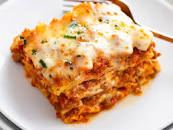

Lasagna

Description
Lasagna is a classic Italian dish known for its layers of pasta, rich meat sauce, creamy cheese, and aromatic herbs. It's a comforting and hearty meal that is loved by many.
Each bite of lasagna offers a delightful combination of flavors and textures, from the tender pasta sheets to the savory meat sauce and gooey melted cheese.
The aroma of lasagna baking in the oven is irresistible, as the tantalizing scents of herbs, garlic, and bubbling cheese fill the kitchen, making your mouth water with anticipation.
Ingredients
- 1 pound ground beef
- 1 onion, diced
- 2 cloves garlic, minced
- 1 can (28 ounces) crushed tomatoes
- 1 can (6 ounces) tomato paste
- 2 tablespoons fresh basil, chopped
- 1 tablespoon fresh oregano, chopped
- 1 teaspoon salt
- 1/2 teaspoon black pepper
- 9 lasagna noodles, cooked according to package instructions
- 3 cups shredded mozzarella cheese
- 1 cup grated Parmesan cheese
- 1 cup ricotta cheese
Steps
- In a large skillet, cook the ground beef, onion, and garlic over medium heat until the meat is browned and the onion is softened. Drain any excess grease.
- Add the crushed tomatoes, tomato paste, basil, oregano, salt, and pepper to the skillet. Stir well to combine. Simmer the sauce for about 20 minutes, allowing the flavors to meld together.
- Preheat the oven to 375 degrees F.
- In a greased baking dish, spread a layer of the meat sauce. Top with a layer of cooked lasagna noodles. Spread a layer of mozzarella, Parmesan, and ricotta cheese over the noodles. Repeat the layers until all the ingredients are used, finishing with a layer of meat sauce and cheese on top.
- Cover the baking dish with foil and bake for 25 minutes. Then, remove the foil and bake for an additional 15 minutes, or until the cheese is golden and bubbly.
- Allow the lasagna to cool for a few minutes before serving. Slice and serve with a sprinkle of fresh basil on top.